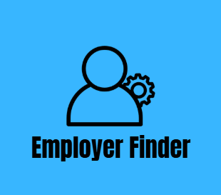
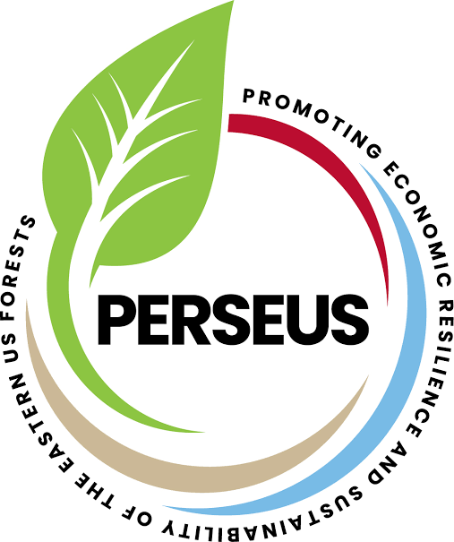

Projects
EmployerFinder

- EmployerFinder is an application that helps users find potential employers based on a job title and location.
- Implemented a search algorithm that matches users with relevant employing businesses.
- Utilized Java and JavaFX to create a user-friendly interface.
NotiScan

- NotiScan is a communication tool created for vehicle owners and their community to quickly communicate without compromising security.
- Drivers are able to send and receive important notifications between
Warnell VR Lab Inventory System

- Created an inventory system for Warnell VR Lab to track device checkouts, send automatic email confirmations, and deadline reminders.
- Implemented using JavaScript AppScripts and connected to Google Forms for user input, and Google Sheets for inventory management.